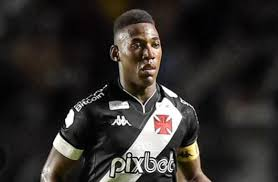
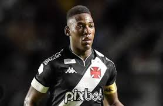

O Club de Regatas Vasco da Gama, comumente conhecido como Vasco, é um dos clubes de futebol mais tradicionais do Brasil. Sua história remonta a 1898,
quando foi fundado por um grupo de imigrantes portugueses no Rio de Janeiro. O clube foi batizado em homenagem ao explorador português Vasco da Gama.
O Vasco da Gama é conhecido por sua rica história e conquistas no futebol.
Alcançou grande sucesso no cenário nacional e internacional. Alguns destaques de sua história incluem:
Carioca: O Vasco é um dos clubes mais bem-sucedidos do Campeonato Carioca, o principal torneio estadual do Rio de Janeiro. Venceu o torneio inúmeras vezes.
Campeonato Brasileiro: O clube venceu o Campeonato Brasileiro em quatro ocasiões, em 1974, 1989, 1997 e 2000.
Libertadores da América: O Vasco alcançou a final da Copa Libertadores em 1998, mas acabou sendo vice-campeão, perdendo para o Cruzeiro.
Copa Mercosul: O clube venceu a Copa Mercosul em 2000.
Participação Internacional: O Vasco tem uma presença internacional significativa e é amplamente reconhecido por sua base de fãs apaixonados.
Além de seu sucesso no futebol, o Vasco da Gama também é conhecido por sua história de inclusão social e pioneirismo.
O clube foi um dos primeiros a aceitar jogadores negros em uma época em que a segregação racial era comum no Brasil.
Sua política de inclusão levou à formação do time conhecido como "Expresso da Vitória," que fez história no futebol brasileiro nos anos 1940.
O Vasco da Gama é um clube com uma base de fãs leais e uma história rica, que o torna uma parte importante da cultura do futebol no Brasil.
 

Redes Sociais
Siga o Vasco nas redes sociais
Fale Conosco